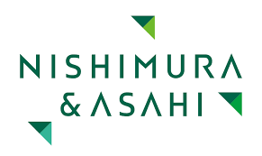
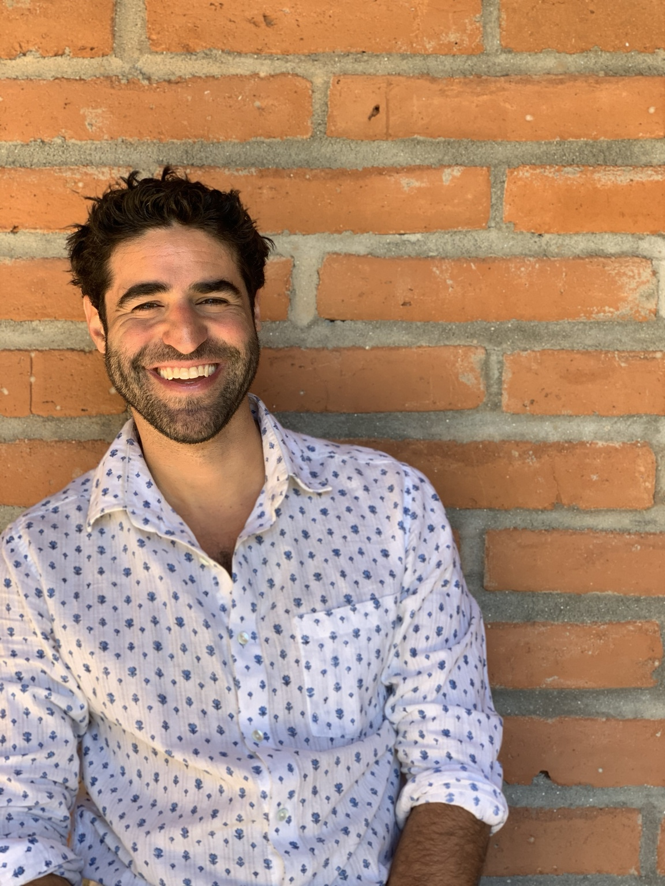

Adam has coached and facilitated leaders from organizations including




Leadership & Team Performance
Strengthen trust, communication, decision-making, and team dynamics when the old ways of working stop being enough.
Adam has coached and facilitated leaders from organizations including

The Challenge
The founder can no longer hold every decision. Conversations that were easy with five people get harder with fifteen. Capable people begin working around one another instead of with one another. The issues are often visible long before anyone has language for them.
Handled well, that tension can lead to better agreements, clearer roles, and stronger performance. Ignored, it becomes friction.
Book a Free Clarity CallDoes any of this sound familiar?
Why Ascentric
Group dynamics shape who speaks, what gets avoided, how trust forms, and whether people can move together under pressure. Most leadership development focuses on the individual. Ascentric works at the level of the group, because that is where teams are actually built or broken.
Seeing what is actually happening in the room: the patterns, the avoidance, the unspoken dynamics shaping how the team moves.
Shared language is the prerequisite for change. Without it, teams can feel the friction but can't move through it.
Turning tension into clearer agreements, better conversations, and practical next steps.
Trust is not a sentiment. It is built through clear agreements, honest communication, and the rhythms that reinforce both over time.
What changes through the work
Clarity, trust, sharper conversations, and movement where things had been stuck.
"Adam has been a thoughtful guide and confidante as I worked through a significant career and life transition. He helped me separate signal from noise and find a path forward that is both authentically mine and worth walking. His style is heart-forward and grounding, but he also pushes. He surfaces the confidence questions and emotional blockages most leaders learn to route around, and he balances that reflective work with a clear sense of what to actually do next. I leave our sessions with more energy and direction than I came in with."
Carlos Flores
Global Hospitality CEO · Founder, HumanTag
"I was at a crossroads. Working with Adam, the session helped me think like a CEO and be a CEO. He's very good at taking the theory and saying, okay, let's put it in action right away. It's not superficial work at all. If you're going through change, I think that Adam's the person to work with."
Fuzieh Jallow
Founder, Terra40
"Adam guided me through an illuminating process, from not knowing where to go next to gaining clarity that led me toward pursuing an MBA and making important shifts in my career path. Working together always felt light and inspiring, while also being grounded in clear, actionable next steps. I'm deeply grateful for the support, empathy, and presence Adam brought throughout the process."
Olesia Gudkovskaya
Founder, The Art of Leadership
Where Most Work Begins
Bring a decision you cannot quite make, a relationship that has become difficult, or a team dynamic that is taking more energy than it should. The session slows the situation down, identifies the pattern underneath it, and gets specific about the next move.
Deeper Paths
Ongoing 1:1 coaching for founders and executives navigating growth, transition, and leadership complexity. The work builds over time as context accumulates.
Learn MoreAn 8-week sprint for leaders working through something live, urgent, or stuck. More active and hands-on than ongoing coaching. Focused on one challenge or transition at a time.
Learn MoreA diagnostic and team alignment process for leadership teams navigating trust, communication, decision-making, and culture under pressure.
Explore Culture CartographyFor teams that need a different setting to rebuild trust, reset how they work together, or navigate a meaningful transition.
Explore Leadership ImmersionsSignature Methodology
A structured diagnostic process for leadership teams that can feel the friction but have not yet named the pattern. Maps how trust, communication, decisions, roles, and norms are actually operating.
Explore Culture Cartography
About Adam
Adam Aronovitz brings 20+ years of experience helping groups become more capable under pressure. His work was shaped in classrooms, wilderness programs, cross-cultural leadership journeys, founder/operator roles, and executive coaching rooms.
Across 30+ countries, Adam has learned to read the patterns most teams struggle to name: how trust forms, how communication breaks down, how roles blur, and how capable individuals become a team that can actually move together.
Start Here
I'd love to hear what you're navigating.
Adam responds to all inquiries within 48 hours.